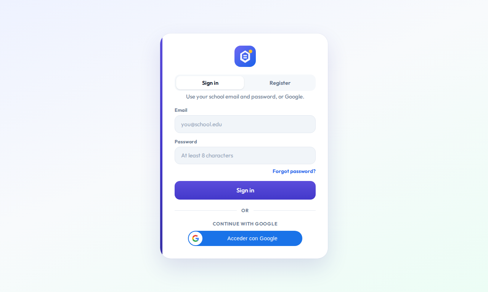
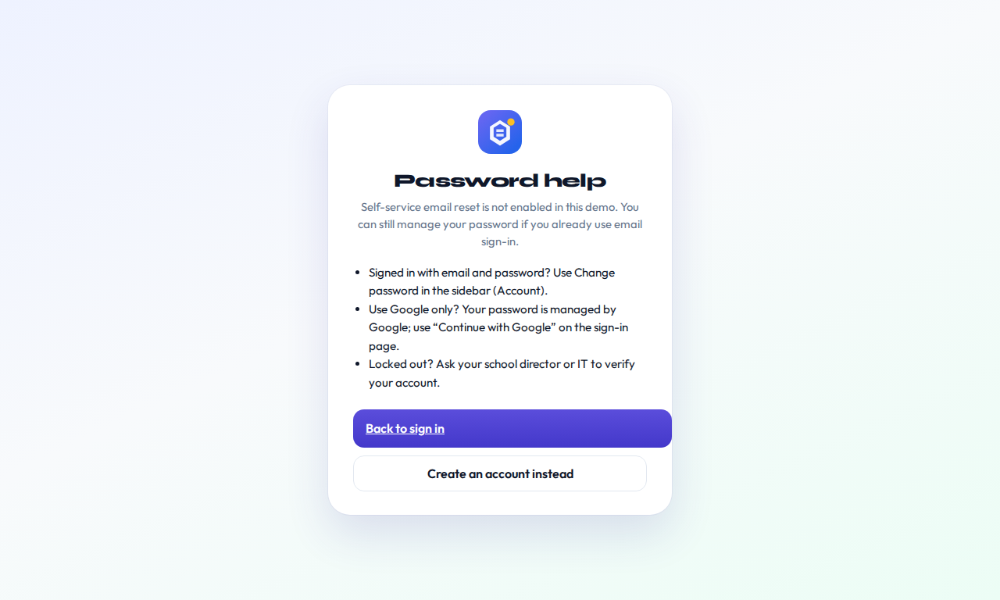
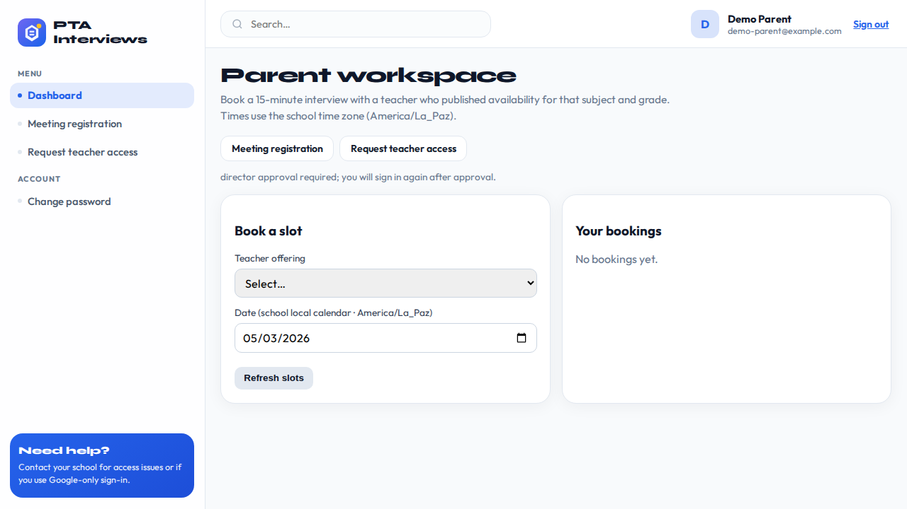
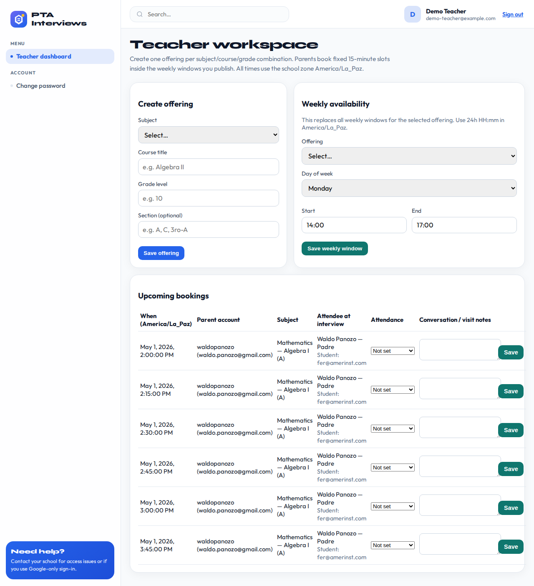

Static gallery. Generate files under assets/ with
cd frontend && npm run capture:showcase
(or make frontend-showcase from the repo root).
With E2E_STACK_URL in .env and Docker running, parent and teacher dashboard shots are included too.
UI language: Captures use English UI strings: Playwright sets localStorage key e2eUiLang to en before load, which overrides catalog uiLanguage for translations. School branding that does not go through i18n may still match server data. When using Docker (E2E_STACK_URL), rebuild the frontend image so the running bundle includes that override (for example docker compose build then up).
Chrome and WebM: Google Chrome plays WebM in this page without extra codecs.
If the video appears blank, open the gallery over http://localhost (any static server) instead of file://, which can block media on some setups.
Safari does not support WebM in the player; use Chrome/Edge/Firefox for preview, or transcode to MP4 for Safari.




Upload the docs/showcase/ folder (including assets/ after you run the capture), or point Pages at /docs
and link to showcase/index.html according to your branch layout.